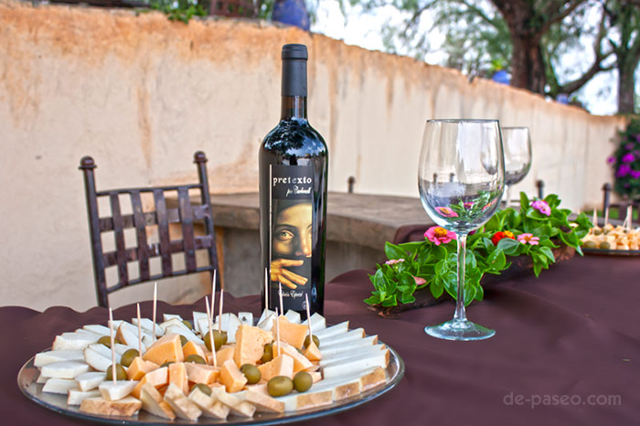

.

RESTAURANTE
Con una gastronomía 100% mexicana, nuestro restaurante ofrece un espacio al aire libre con vista al lago y viñedos!
Nuestra especialidad son pizzas artesanales de cochinita pibil y migajitas de carnitas, así como pastas, ensaladas y cortes para acompañar nuestros vinos de casa: Pretexto, Retinto, Cahuayo, Apertura, Tordillo, Rosillo y Colibrí.
Estamos abiertos Martes a Domingo con atención de 12:00 pm a 5:30 pm, no se necesita reservación, es sujeto a la disponibilidad
Visítanos Pronto!